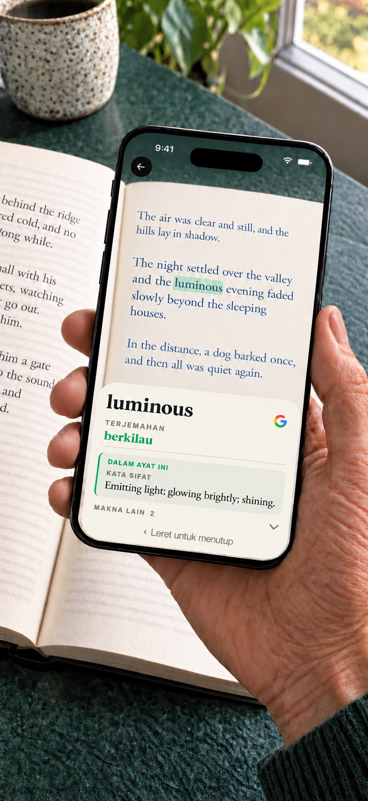

Booktionary · iPhone
Kamus kamera untuk buku bercetak
Perkataan yang belum dikenali tidak perlu mengganggu keseronokan membaca. Halakan kamera iPhone ke perkataan itu, cari maknanya dan teruskan membaca. Tidak perlu menaip.
Untuk iPhone dengan iOS 17 atau lebih baharu. · $1.99 USD

Sebelum bermula
Pilih bahasa buku, halakan kamera ke perkataan dan tunggu sebentar. Leret takrif untuk meneruskan bacaan. Liputan kamus dan terjemahan perkataan berbeza. Internet diperlukan untuk melihat dan memuat turun sumber bahasa. Sentuh dan tahan perkataan dalam takrif untuk mencarinya dalam kamus, menyalinnya atau mencarinya di Google. Kemudian kembali ke entri asal. Anda juga boleh mencari perkataan yang diimbas terus di Google.
Muat turun sekali. Baca tanpa internet.
Kamus bahasa Inggeris sudah tersedia dalam aplikasi. Muat turun kamus lain dan terjemahan perkataan mengikut keperluan. Sumber yang dipasang boleh digunakan tanpa internet. Akaun tidak diperlukan. Carian Google adalah pilihan, membuka pelayar dan memerlukan internet. Teks carian dihantar kepada Google hanya apabila anda memilih tindakan ini. Imej kamera kekal pada iPhone anda.
Satu pembelian merangkumi semua kamus dan pek terjemahan perkataan yang tersedia. Tiada langganan atau pembelian dalam aplikasi.
Makna yang sesuai dengan ayat
Satu perkataan boleh membawa beberapa makna. Pada peranti yang disokong, Booktionary menggunakan teks sekeliling untuk membantu memaparkan makna kamus yang sesuai terlebih dahulu. Makna lain juga boleh dilihat.
Bantuan untuk buku bahasa Inggeris
Paparkan terjemahan perkataan dalam bahasa Melayu di sebelah takrif bahasa Inggeris. Terjemahan takrif tersedia untuk bahasa sasaran lain yang disokong; bagi bahasa Melayu, takrif kekal dalam bahasa Inggeris buat masa ini.

Kamus untuk buku dalam 24 bahasa
Bahasa Belanda, Cina (Ringkas dan Tradisional), Czech, Denmark, Indonesia, Inggeris, Itali, Jepun, Jerman, Korea, Kurdi (Kurmanji, tulisan Latin), Melayu (Rumi), Norway Bokmål, Perancis, Poland, Portugis, Romania, Rusia, Sepanyol, Sweden, Thai, Turki, Ukraine dan Vietnam.
Perkataan bahasa Inggeris boleh diterjemahkan ke bahasa lain dalam senarai ini, serta bahasa Yunani. Pengimbasan buku bahasa Yunani tidak disokong. Sokongan Kurdi meliputi Kurmanji dalam tulisan Latin, bukan Sorani. Sokongan Melayu meliputi Rumi, bukan Jawi. Terjemah perkataan ke bahasa Inggeris daripada kesemua 23 bahasa buku yang disokong selain bahasa Inggeris. Terjemahan takrif ke bahasa Inggeris adalah pilihan apabila model terjemahan yang serasi tersedia.
- EnglishTerbina dalam
- FrançaisMuat turun
- EspañolMuat turun
- PortuguêsMuat turun
- ItalianoMuat turun
- DeutschMuat turun
- DanskMuat turun
- NederlandsMuat turun
- Norsk (bokmål)Muat turun
- РусскийMuat turun
- SvenskaMuat turun
- PolskiMuat turun
- ČeštinaMuat turun
- 日本語Muat turun
- ไทยMuat turun
- RomânăMuat turun
- Tiếng ViệtMuat turun
- TürkçeMuat turun
- Bahasa IndonesiaMuat turun
- 中文 · 简体 / 繁體Muat turun
- 한국어Muat turun
- УкраїнськаMuat turun
- Kurdî (Kurmancî)Muat turun
- Bahasa MelayuMuat turun
Bantuan
Cari kata cepat sambil membaca